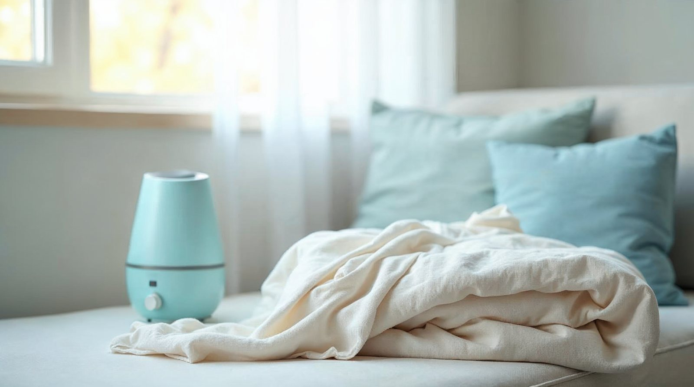
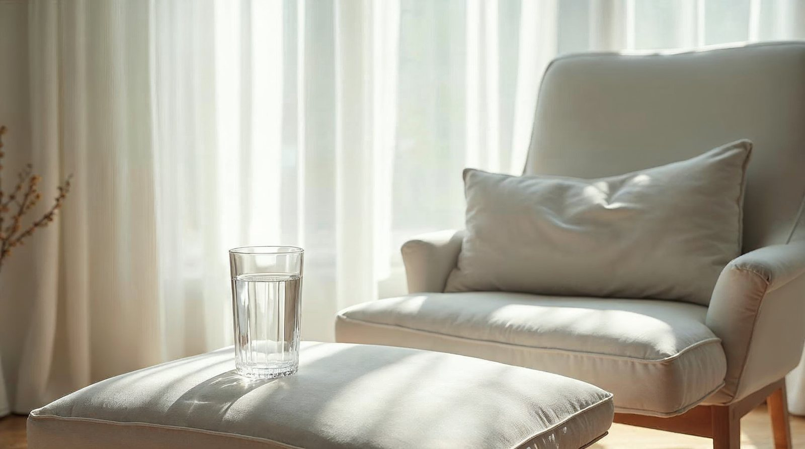
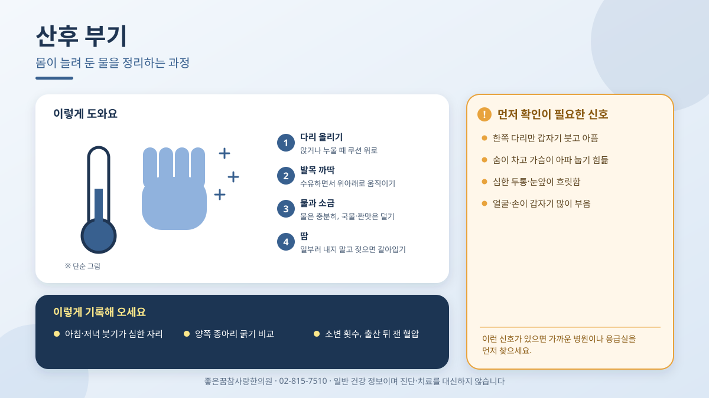

이종호 한의사 감수좋은꿈참사랑한의원 대표원장 (한의사 면허번호 19769)발행 2026-11-26 · 수정 2026-11-26
이 글의 차례
아침에 눈을 뜨니 손가락이 소시지처럼 부어 주먹이 쥐어지지 않습니다. 반지는 진작 빼 두었고, 슬리퍼를 신으려니 발등이 꽉 끼어 들어가지 않습니다. 거울 속 얼굴도 낯설 만큼 부어 있습니다. 출산하면 붓기가 쑥 빠진다고 들었는데, 오히려 출산 뒤 며칠이 더 부은 것 같습니다.
진료실에서 산후 부기 이야기를 꺼내시는 분들은 대개 두 가지를 걱정하십니다. 이 붓기가 언제 빠질지, 그리고 혹시 이대로 살이 되어 버리는 건 아닐지요. 산후조리원에서 붓기 관리 이야기를 많이 듣다 보니 더 조급해지기도 합니다.
먼저 말씀드리고 싶은 것은, 출산 뒤 며칠에서 몇 주 사이의 붓기는 대부분 몸이 임신 중 늘려 두었던 물을 정리하는 과정이라는 점입니다. 몸은 그 물을 땀과 소변으로 차근차근 내보냅니다. 다만 그 과정을 편하게 돕는 방법이 있고, 먼저 확인해야 하는 붓기도 있습니다.
이 글에서는 산후 부기가 왜 생기는지, 언제까지 이어지는지, 다른 원인의 붓기와 어떻게 나누어 보는지, 그리고 생활에서 무엇을 챙기고 한의원에서는 무엇을 함께 살피는지 차례로 정리했습니다.
산후 부기는 언제까지 이어지나요?
출산 직후 며칠은 오히려 붓기가 더 심해졌다고 느끼는 분이 많습니다. 분만 중 맞은 수액, 진통과 힘주기로 몸에 쌓인 부담, 누워 지내는 시간이 겹치기 때문입니다. 제왕절개를 하신 분은 수술 중 수액이 더해져 이 시기의 붓기가 더 클 수 있습니다.
그 뒤 몇 주 동안 몸은 임신 중 늘어났던 물을 땀과 소변으로 내보냅니다. 출산 뒤 밤에 잠옷이 젖을 만큼 땀이 나고 화장실을 자주 가는 것은 이 과정의 일부입니다. 대개 손과 얼굴의 붓기가 먼저 빠지고, 다리와 발의 붓기는 조금 더 오래 남습니다.
많은 분이 출산 뒤 몇 주 안에 붓기가 크게 줄어드는 흐름을 보입니다. 다만 임신 막바지에 붓기가 심했던 분, 오래 서 있거나 앉아 있는 분, 잠이 많이 부족한 분은 조금 더 걸릴 수 있습니다. 몇 주가 지나도 붓기가 줄지 않고 오히려 늘어난다면 다른 원인을 함께 확인해 봅니다.
왜 출산 뒤에도 몸이 부을까요
임신 중에는 아기에게 영양을 보내기 위해 몸속 혈액과 체액의 양이 크게 늘어납니다. 이 늘어난 물은 출산과 동시에 사라지지 않고, 몸이 며칠에서 몇 주에 걸쳐 천천히 정리합니다. 그 사이 물은 중력을 따라 손발과 다리 아래쪽으로 모입니다.
임신 중 호르몬은 혈관을 부드럽게 늘어나게 하고 몸이 물과 소금을 붙잡아 두게 합니다. 출산 뒤 호르몬이 원래대로 돌아가는 데에도 시간이 필요하니, 그 사이에는 붓기가 쉽게 생기고 천천히 빠집니다.
출산 뒤의 생활도 붓기에 영향을 줍니다. 수유하느라 오래 앉아 있고, 아기를 안고 서 있는 시간이 길며, 잠이 쪼개져 몸이 쉴 틈이 적습니다. 다리를 움직이지 않으면 종아리 근육이 펌프처럼 물을 밀어 올리는 일을 덜 하게 되어 아래쪽에 물이 고입니다.
한의학에서는 출산 뒤 기운이 크게 쓰여 몸속 물을 돌리는 힘이 약해진 상태로 산후 부기를 이해합니다. 그래서 붓기만 보지 않고 땀과 소변, 소화, 기운이 떨어진 정도를 함께 살핍니다. 찬 음식이나 찬바람에 붓기가 더 심해진다고 느끼시는 분도 많습니다.
다른 원인의 붓기와는 어떻게 다를까요?
산후 부기는 대개 양쪽에 비슷하게 생기고, 아침보다 저녁에 다리가 더 붓고, 누워 쉬면 조금 가라앉습니다. 날이 갈수록 조금씩 줄어드는 흐름이 보이면 자연스러운 회복 과정일 가능성이 큽니다.
양쪽 붓기가 아니라 한쪽 다리만 유난히 붓거나, 붓기와 함께 혈압과 두통, 숨찬 느낌이 있다면 산후 부기와는 다른 원인을 먼저 생각합니다. 이런 경우는 아래 '먼저 확인이 필요한' 항목을 함께 봐 주세요. 출산 뒤 몇 주는 양쪽 종아리 굵기를 가끔 비교해 보는 습관이 도움이 됩니다.
몇 주가 지나도 붓기가 줄지 않으면서 쉽게 지치고 추위를 많이 타며 피부가 건조해진다면 갑상선 기능을 확인해 볼 수 있습니다. 출산 뒤 몇 달 사이 갑상선 기능이 잠시 흔들리는 경우가 있어서, 이럴 때는 내과에서 혈액 검사를 권합니다.
출산 뒤 드시는 진통제 가운데 일부는 몸이 물을 붙잡아 두게 해 붓기를 늘리기도 합니다. 진통제를 오래 드시면서 붓기가 이어진다면 처방받은 곳에 알려 주세요. 혼자 약을 끊기보다 상의해서 조절하는 것이 좋습니다.
붓기와 살을 헷갈리시는 경우도 많습니다. 붓기는 손가락으로 눌렀을 때 자국이 잠시 남고, 아침과 저녁에 굵기가 달라지며, 쉬면 조금 가라앉습니다. 반면 지방은 하루 안에서 크게 달라지지 않습니다. 출산 뒤 몇 주는 몸무게 숫자에 붓기가 섞여 있다는 것을 기억해 주세요.
얼굴 붓기는 아침에 특히 눈에 띄고 낮 동안 움직이며 조금씩 빠지는 경우가 많습니다. 밤에 짠 음식을 먹었거나 잠을 거의 못 잔 다음 날 더 붓는다고 느끼신다면, 그 연결을 기록해 두시면 좋습니다.

계절에 따라 달라지는 산후 부기
여름에 출산하신 분은 더위 때문에 다리가 더 붓고 땀이 많아 쉽게 지칩니다. 에어컨을 쓰되 찬바람이 몸에 직접 닿지 않게 방향을 돌리고, 얇은 긴소매로 땀을 흡수하면 몸이 덜 무겁습니다. 시원한 물을 한 번에 많이 마시기보다 미지근한 물을 조금씩 자주 드세요.
겨울에 출산하신 분은 추위 때문에 집 안에만 머물며 움직임이 줄어 다리에 물이 고이기 쉽습니다. 난방을 너무 세게 하면 땀이 나고 건조해져 오히려 지칩니다. 실내는 따뜻하되 답답하지 않게, 하루 몇 번은 집 안을 천천히 걸으며 종아리를 움직여 주세요.
먼저 이렇게 여쭙니다
처음 오시면 저는 대략 이런 순서로 여쭙니다. 미리 생각해 오시면 이야기가 훨씬 수월해집니다.
- 출산은 언제, 어떤 방법으로 하셨나요?
- 임신 중 혈압이 높거나 단백뇨가 있다는 말을 들으셨나요?
- 붓기는 얼굴, 손, 다리 가운데 어디가 가장 심한가요? 양쪽이 비슷한가요?
- 붓기가 출산 뒤로 조금씩 줄고 있나요, 오히려 늘고 있나요?
- 하루 소변 횟수와 땀은 어떤가요? 물은 얼마나 드시나요?
- 숨이 차거나 머리가 아픈 날이 있었나요?
모든 질문에 정확히 답하지 못하셔도 괜찮습니다. 출산 뒤 잰 혈압 숫자와 산부인과 퇴원 안내문만 가져오셔도 이야기의 절반은 시작된 셈입니다.
손목이 저리거나 손가락 끝이 찌릿한지도 함께 여쭙니다. 붓기가 손목 안쪽 신경을 누르면 손이 저리는 느낌이 생기기도 하는데, 아기를 안는 동작과 겹치면 손목 통증으로 이어지기 쉽습니다.
일상에서 먼저 해 볼 수 있는 것
산후 부기는 물을 억지로 빼는 것보다 몸이 물을 잘 돌리고 내보낼 수 있게 돕는 쪽이 편합니다. 하루 안에서 할 수 있는 작은 것부터 골라 보세요.
- 앉거나 누울 때 다리를 쿠션 위에 올려 심장 높이 가까이 두기
- 수유하는 동안 발목을 위아래로 까딱까딱 움직이기
- 물은 조금씩 자주 마시기, 붓는다고 물을 줄이지 않기
- 국물과 짠 반찬, 젓갈은 조금씩 덜어 먹기
- 산부인과 검진에서 괜찮다는 말을 들은 뒤 집 안과 동네를 짧게 자주 걷기
- 반지와 꽉 끼는 양말, 손목 밴드는 붓기가 빠질 때까지 빼 두기
붓는다고 물을 적게 마시면 오히려 몸이 물을 더 붙잡아 두려 하고, 수유 중이라면 젖 양에도 영향을 줄 수 있습니다. 물은 충분히 드시되, 짠맛을 줄이는 쪽으로 균형을 맞추세요. 미역국도 국물이 짜지 않게 끓이시길 권합니다.
다리 붓기에는 종아리 근육을 움직이는 것이 가장 좋은 방법 가운데 하나입니다. 누운 자리에서 발끝을 몸 쪽으로 당겼다가 밀기를 열 번씩, 하루 몇 번만 해도 다리에 고인 물이 위로 올라가는 데 도움이 됩니다. 수유하면서도 할 수 있습니다.
손 붓기가 심할 때는 손을 심장보다 높이 든 채 주먹을 천천히 쥐었다 펴는 동작을 해 보세요. 아침에 손가락이 뻣뻣하다면 미지근한 물에 손을 담그고 천천히 움직이면 한결 부드러워집니다.
땀이 많이 나는 시기에는 몸을 너무 덥게 감싸기보다 땀을 흡수하는 얇은 옷을 겹쳐 입고, 젖으면 바로 갈아입습니다. 땀에 젖은 채 찬바람을 맞으면 몸이 으슬으슬하고 무거워지기 쉽습니다. 방은 너무 덥지 않게, 바람이 몸에 직접 닿지 않게 조절해 주세요.
붓기를 빼려는 방법, 이것은 조심하세요
출산 뒤 붓기를 빨리 빼겠다고 땀을 일부러 많이 내는 분이 있습니다. 두꺼운 이불을 덮고 방을 뜨겁게 데우거나 찜질방에 오래 있으면 몸의 물과 기운이 함께 빠져 어지럽고 더 지칠 수 있습니다. 땀은 몸이 알아서 내는 만큼이면 충분합니다.
붓기를 뺀다는 차나 즙, 이뇨 작용이 있다는 식품을 한꺼번에 많이 드시는 것도 조심하세요. 수유 중이라면 성분이 젖으로 넘어갈 수 있고, 수유하지 않더라도 몸의 물과 전해질 균형이 흔들릴 수 있습니다. 드시기 전에 산부인과나 한의원에 먼저 물어봐 주세요.
압박 스타킹은 다리 붓기에 도움이 될 수 있지만, 출산 직후에는 상처나 피부 상태, 다리 혈관 상태를 보고 산부인과에서 안내받은 범위 안에서 쓰시길 권합니다. 너무 꽉 끼는 것을 오래 신으면 오히려 불편할 수 있습니다.
한의원에서 함께 살필 수 있는 경우
- 출산 뒤 몇 주가 지나도 다리와 발이 무겁고 잘 붓는 경우
- 붓기와 함께 쉽게 지치고 기운이 없는 경우
- 땀이 많이 나고 손발이 시리며 몸이 쉽게 차가워지는 경우
- 손이 부으면서 손목과 손가락이 뻣뻣하고 저린 경우
- 소화가 더디고 배가 더부룩하며 대변이 시원하지 않은 경우
좋은꿈참사랑한의원에 오시면 먼저 아래 '먼저 확인이 필요한' 신호가 없는지부터 봅니다. 그다음 맥을 짚고 붓기의 자리와 정도, 땀과 소변, 소화를 함께 확인합니다. 혈압 확인이 필요해 보이면 그 자리에서 재 보고, 숫자가 높으면 산부인과나 내과 진료를 먼저 권합니다.
진찰한 내용을 바탕으로 생활에서 바꿔 볼 것 하나와 함께 침, 부드러운 관리, 한약 상담 가운데 지금 상태에 맞는 것을 정합니다. 한약은 수유 중인지, 드시는 약을 모두 확인한 뒤 신중하게 정합니다. 산부인과나 내과에서 받은 약은 상의 없이 멈추지 않습니다.
다음 임신 가능성이 있거나 계획 중이시라면 먼저 알려 주세요. 그럴 때는 산부인과와 상의한 뒤 방향을 정합니다.
이렇게 기록해 오시면 상담이 쉬워집니다
붓기는 하루 안에서도 달라지고, 며칠 단위로 흐름이 보입니다. 일주일 정도만 간단히 적어 보세요.
- 아침과 저녁에 붓기가 심한 자리
- 양쪽 종아리 굵기 비교(줄자로 같은 높이에서)
- 하루 소변 횟수와 마신 물의 양
- 출산 뒤 잰 혈압이 있다면 그 숫자
- 국물이나 짠 음식을 많이 먹은 날
- 걷거나 다리를 올리고 쉰 시간
기록을 나란히 놓고 보면 붓기가 줄어드는 흐름인지, 어떤 날 더 붓는지가 보이기 시작합니다. 그것이 다음 걸음을 정하는 실마리가 됩니다.
종아리 굵기는 매번 같은 높이에서 재야 비교가 됩니다. 복사뼈에서 손 한 뼘 위처럼 기준을 정해 두고, 같은 시각에 재 보세요. 사진을 함께 찍어 두면 진료실에서 흐름을 보기가 더 쉽습니다.

몸이 정리하는 시간을 기다려 주세요
출산 뒤의 붓기는 열 달 동안 아기를 품느라 늘려 두었던 것을 몸이 차근차근 정리하는 과정입니다. 하루아침에 빠지지 않는다고 조급해하지 않으셔도 됩니다. 그 과정을 편하게 돕는 작은 습관 하나면 충분합니다.
붓기 때문에 거울 보기가 싫어지고 마음이 가라앉는 날도 있을 겁니다. 그런 날은 붓기 이야기와 함께 마음 이야기도 들려주세요. 몸과 마음은 함께 회복합니다.
이번 주에는 수유할 때 다리 올리기, 혹은 발목 까딱이기 하나만 골라 보세요. 다음에 오시면 일주일의 기록부터 함께 펼쳐 보겠습니다.
이런 증상은 먼저 확인이 필요합니다
- 한쪽 다리만 갑자기 붓고 종아리가 단단하게 아프거나, 숨이 차고 가슴이 아파 눕기 힘든 경우
- 머리가 심하게 아프고 눈앞이 흐릿하며 얼굴과 손이 갑자기 많이 붓거나 혈압이 크게 높은 경우
이런 신호가 있으면 한의원보다 가까운 병원이나 응급실을 먼저 찾으세요.
함께 읽으면 좋은 글
- 임신 중 발과 다리가 붓는 부종은 어디까지 흔하고, 생활에서는 어떻게 살피나요?
- 출산 뒤 몸 회복, 관절·땀·잠·기분은 무엇부터 살피나요?
- 저녁마다 다리가 붓고 양말 자국이 깊게 남을 때, 부종은 무엇을 나눠 살피나요?
- 몸이 붓는 것은 순환과 관련이 있나요, 병원은 언제 먼저 가나요?
- 인바디에서 체수분이나 부종 항목이 신경 쓰일 때는요?

여쭙는 것
- 출산은 언제, 어떤 방법으로 하셨나요?
- 임신 중 혈압이 높거나 단백뇨가 있다는 말을 들으셨나요?
- 붓기는 얼굴, 손, 다리 가운데 어디가 가장 심한가요? 양쪽이 비슷한가요?
생활에서 해 볼 것
- 앉거나 누울 때 다리를 쿠션 위에 올려 심장 높이 가까이 두기
- 수유하는 동안 발목을 위아래로 까딱까딱 움직이기
- 물은 조금씩 자주 마시기, 붓는다고 물을 줄이지 않기
한의원에서 함께 살필 것
- 출산 뒤 몇 주가 지나도 다리와 발이 무겁고 잘 붓는 경우
- 붓기와 함께 쉽게 지치고 기운이 없는 경우
- 땀이 많이 나고 손발이 시리며 몸이 쉽게 차가워지는 경우
먼저 확인이 필요한 신호
- 한쪽 다리만 갑자기 붓고 종아리가 단단하게 아프거나, 숨이 차고 가슴이 아파 눕기…
- 머리가 심하게 아프고 눈앞이 흐릿하며 얼굴과 손이 갑자기 많이 붓거나 혈압이 크게…
한눈에 보는 표
| 구분 | 핵심 |
|---|---|
| 여쭙는 것 | 출산은 언제, 어떤 방법으로 하셨나요? 임신 중 혈압이 높거나 단백뇨가 있다는 말을 들으셨나요? |
| 생활에서 해 볼 것 | 앉거나 누울 때 다리를 쿠션 위에 올려 심장 높이 가까이 두기 수유하는 동안 발목을 위아래로 까딱까딱 움직이기 |
| 한의원에서 함께 살필 것 | 출산 뒤 몇 주가 지나도 다리와 발이 무겁고 잘 붓는 경우 붓기와 함께 쉽게 지치고 기운이 없는 경우 |
| 먼저 확인이 필요한 신호 | 한쪽 다리만 갑자기 붓고 종아리가 단단하게 아프거나, 숨이 차고 가슴이 아파 눕기 힘든 경우 머리가 심하게 아프고 눈앞이 흐릿하며 얼굴과 손이 갑자기 많이 붓거나 혈압이 크게 높은 경우 |
자주 묻는 질문
산후 부기가 빠지지 않으면 살이 되나요?
붓기는 몸속 물이라 그대로 살이 되지는 않습니다. 다만 붓기가 오래가는 동안 움직임이 줄고 식사 리듬이 흐트러지면 체중이 늘 수 있어서, 걷기와 식사 리듬을 함께 챙기시길 권합니다.
붓기를 빼려면 땀을 많이 내야 하나요?
일부러 땀을 많이 내면 물과 기운이 함께 빠져 어지럽고 더 지칠 수 있습니다. 몸이 알아서 내는 땀이면 충분하고, 젖은 옷은 바로 갈아입으세요.
붓는데 물을 줄여야 하나요?
물을 줄이면 몸이 물을 더 붙잡아 두려 하고 수유 중이라면 젖 양에도 영향을 줄 수 있습니다. 물은 충분히 드시고, 국물과 짠 반찬을 줄이는 쪽으로 균형을 맞추세요.
붓기 빼는 한약을 수유 중에 먹어도 되나요?
수유 중이라는 것과 드시는 약을 먼저 알려 주세요. 모두 확인한 뒤 신중하게 정하고, 필요하면 산부인과와 상의하시도록 안내합니다.
출산하고 몇 주가 지났는데도 다리가 부어요. 괜찮은가요?
붓기가 조금씩 줄고 있다면 회복이 이어지는 과정일 수 있습니다. 줄지 않거나 늘고 있다면, 혹은 한쪽만 붓는다면 산부인과나 내과에서 원인을 먼저 확인받으세요.
좋은꿈참사랑한의원은 재진 때 지난번 이야기부터 이어서 여쭙니다. 진료시간과 예약은 오시는 길에서 확인하세요.
어디서 상담받을 수 있나요?
좋은꿈참사랑한의원은 서울 동작구 만양로2길 2 신성빌딩 3층·5층(서울 동작구 상도동, 7호선 상도역 3번 출구 근처)에 있습니다. 한의사 3명(이종호 대표원장, 조영기 수석진료원장, 정원영 진료원장)이 진료합니다. 진료시간은 평일 09:30~20:00(점심 13:00~14:00), 토·일·공휴일 09:30~15:00이며, 방문 전 전화로 확인을 권합니다. 예약은 네이버 예약, 카카오톡 상담, 전화 02-815-7510로 받습니다.
이 글은 일반적인 건강 정보이며 개인의 진단이나 치료를 대신하지 않습니다. 증상이 있거나 복용 중인 약이 있다면 진료를 통해 확인하세요. 치료 효과는 개인마다 다를 수 있습니다.
작성 기준: 일반적으로 알려져 있는 건강 정보를 참고해 정리했습니다(대표원장 감수). 증상 기록은 1~2주 동안 하루 1회, 비슷한 시간에 적어 오시면 지난 상태와 비교하기 쉽습니다.